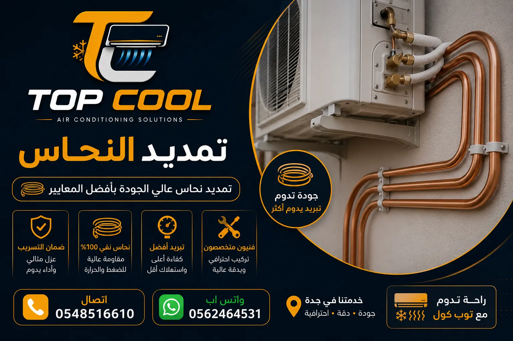

نوفر خدمات تمديد وتأسيس مواسير النحاس للمكيفات بجدة للمنازل والفلل والمباني، مع تحديد مسارات التمديد والمقاسات المناسبة وتجهيز العزل واختبار الشبكة حسب متطلبات نظام التكييف.
يتم اختيار نوع وقطر المواسير وفق متطلبات المكيف وطول مسار التمديد ومواصفات الشركة المصنعة.
يمكن اختبار شبكة المواسير بالنيتروجين قبل إغلاق التمديدات للتحقق من سلامة الوصلات وفق متطلبات النظام.
تنفيذ مسارات المواسير والعزل والوصلات وفق متطلبات العمل ونوع نظام التكييف.

تنفيذ أعمال تمديد وتأسيس مواسير النحاس للمكيفات بجدة وفق متطلبات التأسيس الفني
تعد عملية تمديد مواسير النحاس للمكيفات بجدة من الخطوات الأساسية لضمان عمل نظام التكييف والتبريد بكفاءة في المباني والفلل والمنازل. وتعد مواسير النحاس المسار المغلق لتدفق مائع التبريد بين الوحدة الداخلية والوحدة الخارجية، مما يتطلب اختيار مواسير مناسبة وتجهيز العزل الحراري لحماية الخطوط وضمان استقرار الضغط التشغيلي.
تقدم شركة تمديد مواسير النحاس بجدة توب كول خدمات تأسيس وتمديد خطوط التكييف، حيث نراعي في مرحلة التأسيس مطابقة أقطار المواسير لمواصفات الجهاز الموصى بها من الشركة المصنعة، مع مراعاة اختيار المسارات المناسبة لتقليل الانحناءات الزائدة التي قد تؤثر على تدفق التبريد.
يعمل فريقنا على دراسة موقع التمديد قبل البدء في الأعمال، مع تحديد أماكن الفتحات والمسارات المناسبة للمواسير وأنابيب الصرف، وتوفير العوازل الحرارية المناسبة لحماية المواسير من التأثيرات الخارجية. كما نتيح التواصل للاستفسار عن تفاصيل الخدمة والمراحل التأسيسية المختلفة عبر تركيب مكيفات سبليت بجدة.
سواء كنت في مرحلة الإنشاء لفيلا جديدة أو تقوم بأعمال تجديد لموقع سكني أو تجاري في جدة، نوفر فريقًا مجهزًا بالأدوات المناسبة لقطع وتشكيل النحاس وتنفيذ التوصيلات. يمكنك التواصل معنا للحصول على معاينة ميدانية ودراسة متطلبات الموقع عبر زيارة صفحة تواصل معنا أو الاتصال المباشر بالرقم 0544516970.
يتطلب اختيار النحاس المناسب في خدمة تمديد مواسير النحاس للمكيفات بجدة معرفة بالفروق الفنية بين أنواع المواسير المتوفرة في الأسواق. تختلف المواسير حسب الشركة المصنعة، السماكة، المواصفات، والاستخدام الموصى به من الشركة المصنعة للمكيف.
تستخدم بعض التمديدات مواسير النحاس الأمريكية أو الكورية بحسب متطلبات النظام وقطر الأنبوب وسماكته التشغيلية. وتتميز المواسير ذات السماكة المناسبة بمقاومتها لضغط مائع التبريد ومرونتها أثناء الثني بالأدوات المخصصة. ويمكن الاطلاع على المزيد من التفاصيل الفنية في مقالنا حول أفضل أنواع مواسير النحاس بالمدونة.
كما يتم تجهيز المواسير بالعزل الحراري المناسب لحمايتها من فقدان البرودة، وتغليفها بشريط حماية لحفظ الخطوط وكابلات الكهرباء بشكل منظم، مما يسهم في تجهيز الموقع لتركيب المكيف بشكل صحيح لاحقًا عبر خدمات مثل تركيب مكيفات سبليت بجدة أو فك وتركيب المكيفات بجدة.
تتم عملية تأسيس وتمديد شبكات نحاس المكيفات بجدة وفق خطوات منظمة تبدأ بالتنسيق مع القائمين على الأعمال المعمارية في المباني قيد الإنشاء أو أثناء التجديدات، وذلك لإخفاء خطوط التمديد داخل الجدران أو الأسقف المستعارة بشكل مرتب.
يتم تحديد المسار المناسب حسب تصميم المبنى ومتطلبات المكيف وطبيعة التمديد، مع فتح المجاري في الجدران بالأدوات المناسبة وتجهيز الجلب الحامية لتمرير الأنابيب النحاسية المعزولة لحمايتها أثناء أعمال البناء واللياسة.
كما يتم تجهيز نقاط التوصيل ومخرجات أنابيب الصرف والكهرباء بمواقع التثبيت المناسبة لتسهيل عملية تركيب الوحدات لاحقًا. ويمكن التعرف على تغطيتنا في مختلف المناطق مثل خدمات حي الصفا أو خدمات حي السلامة عبر دليل أحياء جدة.
عند تمديد المسافات التي تتطلب توصيل أنابيب النحاس، يتم استخدام شعلة اللحام والمواد المناسبة للتوصيل الحراري لضمان إحكام الوصلات ومقاومتها للضغوط التشغيلية.
ويُعد إمرار غاز النيتروجين بضغط خفيف أثناء عملية اللحام خطوة فنية تساعد في تقليل الأكسدة الداخلية داخل أنبوبة النحاس، مما يحافظ على نظافة مجرى مائع التبريد ويقلل من احتمال انسداد الأجزاء الدقيقة بالنظام.
يتم استخدام أدوات توسيع وتجهيز أطراف المواسير لضمان التداخل المناسب قبل اللحام، مما يساعد في تدفق التبريد بسلاسة. وتتكامل هذه الأعمال مع الخدمات الأخرى مثل صيانة وإصلاح المكيفات بجدة و غسيل وتنظيف المكيفات بجدة.
يُعد اختبار ضغط النيتروجين لشبكات النحاس بجدة من الخطوات الفنية المفيدة للتحقق من سلامة التوصيلات والوصلات قبل التلييس وإغلاق الجدران.
يتم تحديد ضغط الاختبار ومدة الاختبار وفق نوع النظام ومواصفات الشركة المصنعة ومتطلبات التنفيذ، حيث يُحقن الغاز داخل الشبكة لمراقبة مؤشر الضغط للتأكد من خلو الخطوط من أي تسريب.
وفي حال وجود أي تراجع في الضغط، يتم فحص الوصلات ومعالجة مكان الخلل قبل إتمام أعمال التشطيب. ويمكن حجز معاينة وفحص التمديدات عبر صفحة التواصل.
يتطلب تمديد مواسير النحاس للمكيفات بجدة اختيار المواد العازلة المناسبة للحد من التأثر بدرجات الحرارة المحيطة وتجنب تكثف الرطوبة على الأنابيب.
يتم اختيار العزل المناسب للمواسير، كما يتم تحديد مقطع الكابل وفق قدرة المكيف ومتطلبات الدائرة الكهربائية والتوصيات الفنية المعتمدة.
يساعد العزل الجيد والتمديد المنظم في حماية الأسقف والجدران من مشاكل تسرب المياه الناتجة عن التكثف، ويمكن متابعة تفاصيل الخدمات المتاحة عبر تركيب المكيفات بجدة.
تتطلب أعمال تمديد مواسير النحاس للمكيفات المركزية بجدة والأنظمة السقفية المخفية مراعاة متطلبات المسارات الخاصة وحسابات التدفق بحسب قدرة ونوع الجهاز.
تختلف أقطار ومواصفات النحاس بين الأنظمة المركزية وأجهزة السبليت، وتختلف متطلبات التمديد حسب النظام وتصميم المشروع وتعليمات الشركة المصنعة.
تقدم توب كول خدمات التمديد والتأسيس لمختلف الأنظمة وفق التوصيات المعتمدة، ويمكن التواصل معنا عبر صفحة التواصل للاستفسار عن متطلبات مشروعك.
في بعض المباني والمنازل، قد تتأثر خطوط النحاس القديمة بالتلف أو الانسداد، مما يستدعي إجراء فحص وتحديد الخلل في الشبكة.
يتم تحديد طريقة الإصلاح أو الاستبدال بعد فحص حالة المواسير ومكان الخلل وطبيعة التشطيبات، سواء بإصلاح الجزء المتضرر أو تمديد خطوط جديدة مسارها مناسب للموقع.
يمكنك التواصل مع فريقنا عبر تواصل معنا 0544516970 لبدء الفحص والمعاينة.
تنبيه: المقاسات التالية أمثلة شائعة وليست بديلًا عن الرجوع إلى كتالوج الشركة المصنعة للمكيف، لأن قطر المواسير يعتمد على الموديل وطول التمديد ونوع النظام.
أمثلة شائعة لأقطار المواسير بحسب قدرة الجهاز:
• مكيف 12,000 BTU (1 طن): غالباً خط سائل 1/4 بوصة + خط سحب 3/8 بوصة.
• مكيف 18,000 BTU (1.5 طن): غالباً خط سائل 1/4 بوصة + خط سحب 1/2 بوصة.
• مكيف 24,000 BTU (2 طن): غالباً خط سائل 1/4 بوصة + خط سحب 5/8 بوصة.
• مكيف 36,000 BTU (3 طن): غالباً خط سائل 3/8 بوصة + خط سحب 5/8 أو 3/4 بوصة.
الحد الأقصى لطول التمديد ومسارات المواسير يختلف حسب موديل المكيف وتعليمات المصنع. ويمكنك الاستفادة من مقالاتنا الفنية عبر مدونة توب كول.
تهتم توب كول بتوفير خدمات تمديد مواسير النحاس للمكيفات بجدة وفق معايير تنفيذ واضحة تلبي احتياجات العملاء في المباني السكنية والتجارية.
تشمل خدماتنا:
• تحديد مسار التمديد المناسب للمبنى.
• اختيار المقاسات حسب مواصفات المكيف والنظام.
• تجهيز العوازل الحرارية وخطوط الحماية.
• تنفيذ الوصلات والتوصيلات اللازمة.
• إجراء اختبار ضغط الشبكة عند الحاجة وفق الاتفاق.
• التنسيق والتواصل المباشر للمعاينة والاستفسارات.
يمكنك التواصل معنا عبر صفحة اتصل بنا 0544516970 للاستفسار وحجز موعد معاينة.
توفر توب كول خدمات التأسيس والمعاينة والتمديد لمختلف أحياء ومناطق مدينة جدة:
تنبيه: يتم تحديد السعر النهائي لتأسيس وتمديد مواسير النحاس بجدة بعد معرفة تفاصيل الموقع، قطر المواسير، طول المسار، نوع المكيف، ونطاق العمل المطلوب.
| عنصر التكلفة / العامل | تأثيره على التكلفة والأسعار | تفاصيل وملاحظات المعاينة |
|---|---|---|
| قطر المواسير ومواصفاتها | تختلف التكلفة بحسب مقاس النحاس (1/4، 1/2، 5/8، 3/4) ونوع الماركة (أمريكي/كوري) | يتحدد قطر الأنبوب بناءً على قدرة المكيف التبريدية (BTU) |
| طول مسار التمديد | تحسب التكلفة الإجمالية بناءً على عدد الأمتار المطلوبة من الوحدة الداخلية إلى الخارجية | يتم قياس المسار الفعلي بدقة أثناء المعاينة الميدانية |
| نوع العزل الحراري والتكسية | تتأثر التكلفة بنوع عوازل مواسير النحاس (ارمافليكس/عزل حراري) والشريط الحافظ (شينكو/تيب) | العزل الجيد يحمي الخطوط من التكثيف وارتفاع درجات الحرارة بجدة |
| طبيعة التأسيس وأعمال الحفر والفتح | تتفاوت التكلفة إذا تطلب العمل تكسير جدران، فتحات بالكور، أو دفن تحت الأرض | التأسيس للمباني تحت الإنشاء يختلف عن التمديد الظاهري للمباني القائمة |
| عدد الوحدات ونوع نظام التكييف | تتوفر مزايا في التكلفة للمشاريع، الفلل، والمباني ذات الوحدات المتعددة | أنظمة السبليت، الكاسيت، والدكت المركزي لكل منها متطلبات مخصصة |
| نطاق العمل الشامل بالموقع | تسعير مخصص بعد المعاينة الميدانية | يتم تحديد السعر النهائي بعد معرفة تفاصيل الموقع ونوع المكيف ونطاق العمل |
| وجه المقارنة | المواصفات الجيدة للمواسير | المواسير رقيقة الجدار / غير المطابقة |
|---|---|---|
| نقاء المعدن | نحاس بكر نقي عالي المقاومة | شوائب متعددة تؤثر على الثني |
| سماكة الجدار | سماكة مناسبة تتحمل الضغوط التشغيلية | سماكة خفيفة عرضة للثقب |
| تحمل الفريون الحديث | أداء مستقر مع غاز R410A / R32 | احتمالية تسريب تحت الضغوط العالية |
| العمر الافتراضي | عمر افتراضي طويل مع التأسيس الصحيح | تلف سريع وحاجة مستمرة للصيانة |
ملاحظة: المقاسات التالية أمثلة استرشادية، وتعتمد المقاسات النهائية على موديل المكيف، طول التمديد، نوع النظام، وكتالوج الشركة المصنعة.
| قدرة المكيف (BTU / طن) | قطر خط السائل (Liquid Line) | قطر خط السحب (Suction Line) | سلك الكهرباء الموصى به |
|---|---|---|---|
| 12,000 BTU (1 طن) | 1/4 بوصة | 3/8 بوصة | حسب القدرة والكود الكهربائي |
| 18,000 BTU (1.5 طن) | 1/4 بوصة | 1/2 بوصة | حسب القدرة والكود الكهربائي |
| 24,000 BTU (2 طن) | 1/4 بوصة | 5/8 بوصة | حسب القدرة والكود الكهربائي |
| 36,000 BTU (3 طن) / دولابي | 3/8 بوصة | 5/8 أو 3/4 بوصة | مخصص للأحمال الكبيرة |
نستعرض نطاقات الخدمة المتاحة لتأسيس وتمديد مواسير النحاس للمكيفات بجدة:
أمثلة توضيحية لبعض الحالات ومتطلبات العملاء عند طلب خدمة تمديد وتأسيس مواسير النحاس بجدة:
"تأسيس مسارات النحاس وتجهيز العزل الحراري واختبار الضغط قبل أعمال اللياسة والتشطيب."
"فحص وتحديد موقع التسريب في الخطوط القديمة واستبدال الجزء المتضرر بمواسير جديدة معزولة."
"تحديد أقطار المواسير وتمديد الخطوط للأجهزة ذات القدرات التبريدية الكبيرة مع التغليف المناسب."
"تعديل المسارات وتجهيز فتحات التكييف بما يتناسب مع المخطط المعماري الداخلي."
إجابات تفصيلية ودقيقة عن أهم الأسئلة والاستفسارات الشائعة حول تأسيس وتمديد مواسير النحاس بجدة.
يعتمد اختيار شركة تمديد مواسير النحاس على خبرة الفنيين، مطابقة المقاسات لمواصفات المكيف، جودة مواد التمديد، وطريقة اختبار الشبكة قبل إغلاق التمديدات. وتقدم توب كول خدمة تمديد وتأسيس مواسير النحاس للمكيفات بجدة.
يختلف سعر متر تمديد النحاس حسب قطر المواسير، نوعها، طول المسار، العزل، وطبيعة أعمال التأسيس.
تختلف المواسير حسب الشركة المصنعة والمواصفات والسماكة والاستخدام الموصى به من الشركة المصنعة للمكيف.
يمكن إجراء اختبار ضغط بالنيتروجين قبل إغلاق التمديدات وفق متطلبات النظام وتعليمات الشركة المصنعة.
تعتمد الأقطار على قدرة وموديل المكيف وتعليمات الشركة المصنعة وطول التمديد.
يمكن أن تشمل أعمال التأسيس العزل وخط الصرف والكابلات بحسب نطاق العمل المتفق عليه.
تختلف مدة التنفيذ حسب عدد الوحدات وطول المسارات وطبيعة المبنى وأعمال الحفر.
يمكن فحص تحديد موقع التسريب واستبدال الجزء التالف أو تمديد خطوط جديدة بحسب حالة المواسير وطبيعة التشطيبات.
يساعد إمرار غاز النيتروجين أثناء اللحام على تقليل تكون طبقات الأكسدة داخل المواسير، مما يحافظ على نظافة مجرى التبريد.
الحد الأقصى لطول التمديد يختلف حسب موديل المكيف وتعليمات الشركة المصنعة.
يمكن توفير الضمان حسب نوع الخدمة ونطاق العمل والشروط المتفق عليها.
تتوفر الخدمة في مناطق وأحياء متعددة داخل جدة، ويمكن التحقق من إمكانية الوصول إلى موقعك عند التواصل.
يمكن مراجعة المخططات ودراسة مسارات النحاس وقدرات المكيفات المطلوبة للمبنى بحسب الاتفاق ونطاق الخدمة.
يتم اختيار مقطع الكابل وفق قدرة المكيف ومتطلبات الدائرة الكهربائية والكود والمواصفات المعتمدة.
يمكنك التواصل معنا عبر الهاتف أو الواتساب على الرقم 0544516970 للتنسيق والمعاينة وتحديد التفاصيل.
تواصل مع توب كول لمعرفة تفاصيل التمديد والمقاسات المناسبة ونطاق الخدمة والتكلفة حسب موقعك ونوع المكيف.